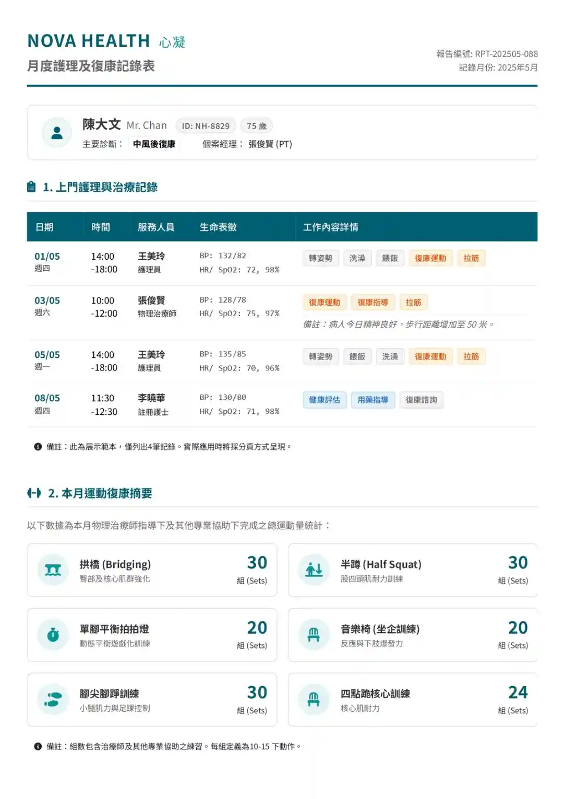
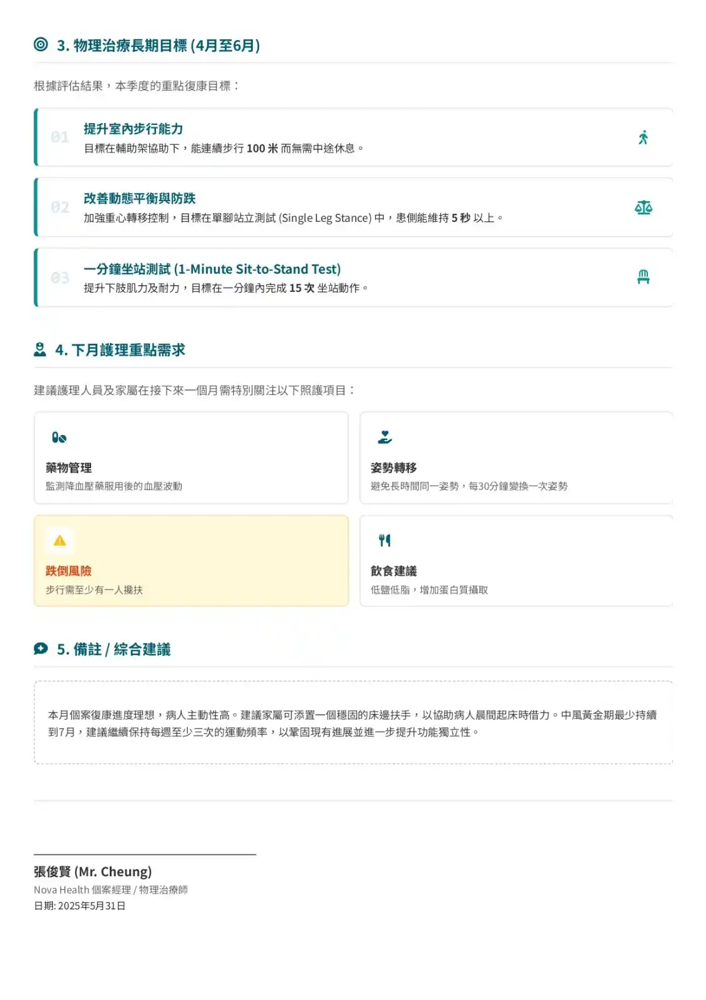

優惠


為何選擇芯凝
堅持「專科專配」
醫療專業對口
芯凝由資深物理治療師及護士團隊主理。我們堅持不只是派員照顧，更是根據每位使用者的具體需求，指派具備相關專業背景的個案經理全程跟進。
- 系統化醫療記錄，進度一目了然
- 由註冊護士擔任個案經理，專責跟進高護理需求個案
- 由理工大學物理治療師擔任個案經理，主理高復康需求個案
- 緊密聯繫供應商，協助選購企床、電動輪椅及天花吊架等先進產品
- 如服務使用者患有罕見病或複雜病例，團隊可安排具備特殊學校經驗的專業人士跟進。
- 對於認知障礙患者，團隊參考了學前教育的概念，使復康遊戲化。
芯凝月度報告範例


透明化醫療記錄與監督
芯凝堅持服務透明度，透過系統化的記錄機制，確保護理質素始終如一：
目標設定
物理治療師為每位客人制定三項專屬長期（三個月）目標。
每日記錄
到戶員工須詳細填寫護理清單、運動次數及維生指數，讓專業人員有效監督護理情況。
月度報告
整理工作記錄並提供月度報告，監督護理情況。
季度報告
物理治療師每三個月詳列肌能狀況與目標實現進度。